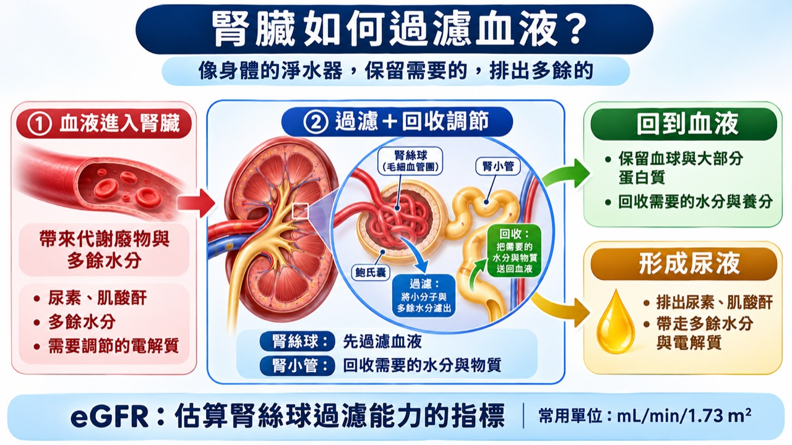

正在開啟腎絲球過濾率計算小程式…
正在開啟腎絲球過濾率計算小程式…
從健檢報告找出肌酸酐，看看腎臟過濾血液的估計能力。

找報告中的「血清肌酸酐」或 Creatinine（Cr）。沒有報告也可以用範例試玩。
適用於滿 18 歲、肌酸酐相對穩定的成人。未成年者需用兒童或青少年公式。懷孕、正在透析、近期腎功能快速變化或肌肉量特殊時，請由醫療團隊解讀。請勿用本工具自行調整藥量。
單次 eGFR 只能提供線索。判斷慢性腎臟病還要考量至少三個月的變化、尿白蛋白／肌酸酐比值（uACR）或其他腎損傷證據。
如果反覆出現泡沫尿、腳腫、血壓偏高、臉色蒼白或容易疲倦，你會怎麼做？
你已練習讀取肌酸酐、換算 eGFR，也知道哪些變化值得記下來。下次看診時，可以問「和上一次相比，我的 eGFR 有什麼變化？需要驗尿白蛋白嗎？」
完成卡只顯示挑戰名稱與完成訊息。採用成人 2021 CKD-EPI 血清肌酸酐公式，使用年齡、性別與肌酸酐計算。µmol/L 除以 88.4 後換算為 mg/dL。報告若使用不同公式，結果可能不同。